Engr 2 Project Portfolio
Six hands-on design projects — laser cutting, vinyl, enclosures and 3D printing — documented from first sketch to finished piece.
Engr 2 projects
Click a project to read the full write-up.
From the archive
Engr 110 · Spring 2026 · Team project
Design Notebook
Laser-Cut & Vinyl Cover
A custom cover for my design notebook — two laser-cut windows framing layered, two-color vinyl stickers.
Project Goal
Design and build a cover for my design notebook that is both creative and aesthetically pleasing, using stickers and decoration made on the vinyl cutter.
Prototype Details
The cover is built from three primary elements.
Laser-cut windows. The most noticeable feature is the pair of cutouts on the front cover (Fig 1). These could have been cut on the Cameo, but given the thickness of the cover stock and how easily the laser cutter handles simple shapes, I cut both windows on the laser cutter at 80% speed and 35% power.
Two-color vinyl stickers. Behind the windows sit two two-color stickers from the vinyl cutter — a frog and a GEREMIA name plate — made up of five cut pieces in total so each sticker carries the right colors. Their thin, delicate features made weeding slower and messier than I had planned for.
Layered alignment. Each underlying sticker is cut about ⅛″ larger than the window above it, so small misalignments during placement don’t show.
80% speed, 35% power
5 cut pieces total
Time Log
About 5 hours in total, across:
- Testing different backing patterns — words, textures, and layouts.
- Dialing in machine settings with the Maker Lab teaching assistants.
- Choosing clip art simple enough to cut and transfer cleanly.
- Weeding.
- Placing and aligning the stickers.
- Finish work.
Reflection
Always test first. Both the laser cutter and the vinyl cutter were much easier to work with once I had scrap material to test on before committing to anything final — especially the laser cutter, since I was cutting through the notebook itself. I also learned that serif fonts are unnecessarily difficult to weed.
Acrylic LED Sign
Narnia Lamppost
A laser-engraved acrylic sign that sits in an LED base and lights up where it was engraved. It took three tries: a cowboy test piece, then two lampposts.
This page goes through the project in order. First is what I made and why, then the research I did, then each of the three versions and what I learned from them. After that is my time log, a reflection, and the final sign.
Overview
The assignment was to make an edge-lit sign. You engrave an image into a piece of clear acrylic, and it stands in a base with LEDs that shine up into the bottom edge. The engraved parts light up and the rest of the acrylic stays mostly clear.
My final design is a lamppost. It reminded me of the lamppost in The Lion, the Witch and the Wardrobe, the one without a crossbar that stands alone in the woods of Narnia. A glowing lamppost felt like a good fit for a light-up sign.
Before cutting anything, I measured the opening of the LED base with calipers and designed the tab at the bottom of the sign to match, so every version fit the base.
Research
I wanted to understand why only the engraving lights up. Light from the LEDs enters the bottom edge and bounces around inside the acrylic, which is called total internal reflection. Where the surface is engraved, the light escapes and you see it. So the image needs to be made of solid, high-contrast shapes, because light gray detail doesn't show up much.
I also found out that there are two kinds of clear acrylic, and they engrave differently. Cast acrylic engraves to a bright frosted white. Extruded acrylic melts more and leaves a fainter, clearer mark (more on frosted engraving). This ended up explaining what happened with my third version.
Laser Settings
These were different from the settings I used for cutting paper on my design notebook in Project 1. I used the same settings for all three versions.
30% power
100% power
Prototypes
Version 1 — The Cowboy
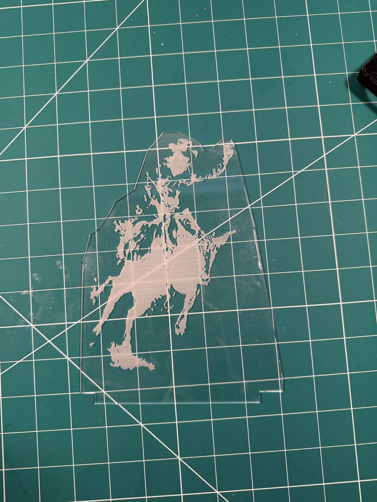
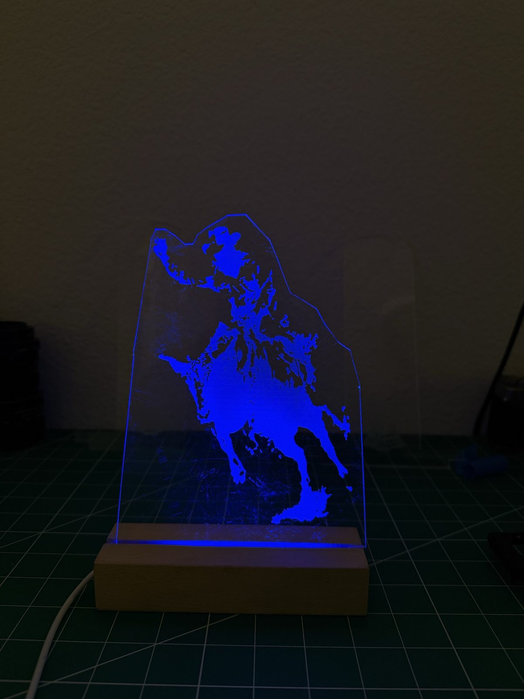
The cowboy was mostly a test to learn the laser cutter and see how an engraving would come out. I like how the image turned out. It's made of big solid shapes, so it lights up bright and clear in the base (Fig 2b). The problem was the outline. I traced a rough shape around the figure, and it came out uneven and kind of random looking. You can also see scratches glowing across the lower half of the sign from handling it.
What I learned: the outline of the sign matters as much as the image on it.
Version 2 — The Lamppost
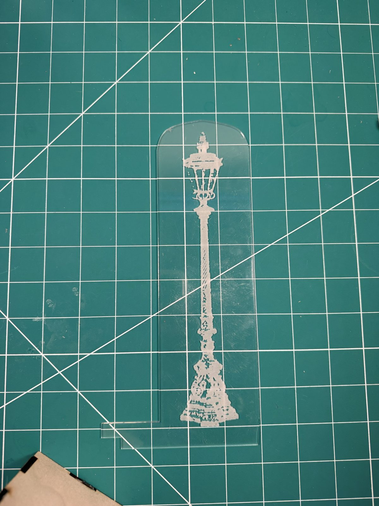
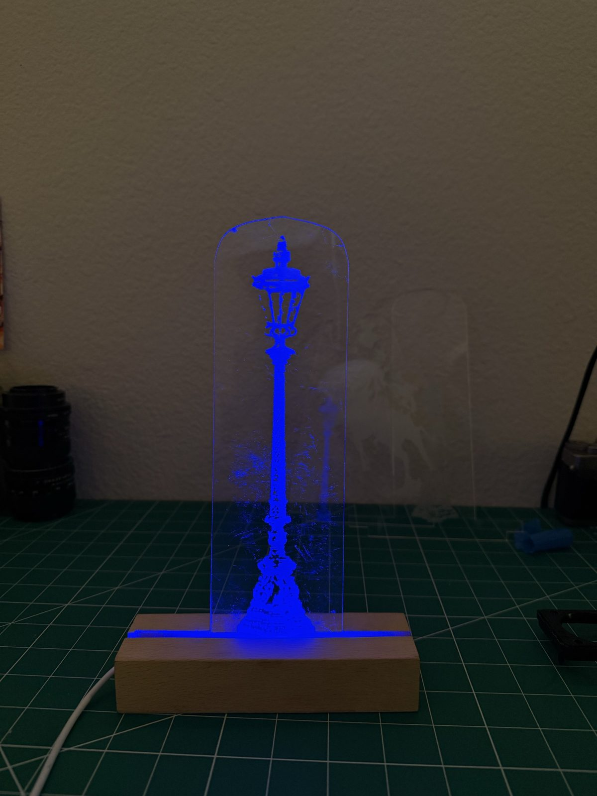
For the second version I switched to the lamppost and gave it a symmetrical outline: a tall rectangle with a rounded top and a stepped tab at the bottom that fits into the base. The lamppost is symmetrical too, so the shape matches the image, and I think it looks a lot better. The engraving came out crisp and white, and it fit the base well. Lit up, it's the sharpest of the three (Fig 3b).
The design worked, but the sign got scratched when I was carrying it around, and part of the tab broke off. You can see the missing piece on the lower left of the tab in Fig 3a. The scratches are a bigger deal on an edge-lit sign than on a normal part. A scratch breaks the surface the same way the engraving does, so it lets light out and glows. In Fig 3b you can see them as blue streaks around the middle of the pole.
What I learned: finished parts need to be protected. Leaving the masking paper on and carrying it flat would have saved it.
Version 3 — The Lamppost on Scrap
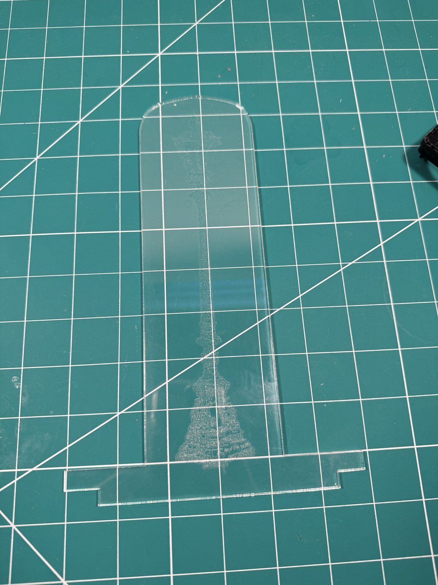
To replace the broken sign, I cut the same file again on a piece of scrap acrylic with the exact same settings. The cut and the tab came out fine, but the engraving looked very different. It's faint and mostly clear, and the detail at the bottom of the lamppost is streaky. You can see the difference in Figs 4a and 4b.
Since the file and settings didn't change, the material must have. My best guess is that the scrap was extruded acrylic and the first sheet was cast, which lines up with what I found in my research.
What I learned: the material changes the result even when everything else is the same. A small test engrave on a corner of an unknown sheet would have shown this right away.
Time Log
Each version went faster than the last as I got more comfortable with the laser cutter.
| Step | Time | Activity & Reflection |
|---|---|---|
| Version 1 | ~2 hr | Learned the laser cutter, found settings for acrylic, picked the cowboy image, measured the LED base with calipers, and designed the tab. Most of the time went into learning the machine and getting the file right. |
| Version 2 | ~1 hr | Picked the lamppost, drew a symmetrical outline, and cut it. Fit and engraving were good. It got damaged afterward. |
| Version 3 | ~1 hr | Recut the lamppost on scrap with the same settings. The engraving came out faint, so I looked into why and compared it to Version 2. |
Total: about 4 hours.
Reflection
I enjoyed getting familiar with the laser cutter. I learned that the two laser cutters we have don't place the design in the same spot on the cutting bed, so you have to know which machine you're on before you line up your material. I also learned how much the settings depend on the material. What works for paper doesn't work for acrylic, and two sheets of clear acrylic can engrave completely differently with the same settings.
The other big lesson was about the outline. The cowboy engraving looked good, but the rough outline made the whole sign look unfinished. The lamppost's symmetrical shape made a big difference. Measuring the base with calipers first was also worth it, because I never had to recut a sign for fit and could spend my time on how it looked.
Seeing the signs lit up also showed me how much scratches matter. Any mark on the acrylic lights up, so a sign that looks fine on the table can look worn once it's in the base. If I did it again, I'd test engrave any scrap before using it and keep the masking on until the sign goes in the base.
Final Display
My final sign is Version 3. I ran out of scrap and used what I had, so it isn't ideal, but it's the one with the tab in one piece.
Lit up, Version 3 looks better than I expected from the unlit photo. The whole lamppost glows and the shape is easy to make out. Next to Version 2, the engraving is grainier and the fine detail in the lantern and the base is softer, since the faint raster lets out less light. It also has fewer scratches, so the clear parts of the acrylic stay dark. The wooden LED base holds it straight, and the full tab sits flush in the slot.
2D to 3D
Bluetooth Speaker Enclosure
I took apart an Anker Soundcore 2 Bluetooth speaker and built it a new laser-cut plywood box, with a rastered swan on the front.
This page goes through the project in order. First is what I made and why, then my pitch, the research I did, and the teardown of the original speaker. After that is my prototype, the measurements and design, the build, my time log, a reflection, and photos of the finished speaker.
Overview
The goal of Project 3 was to make a 3D object out of flat ⅛″ plywood on the laser cutter, with a rastered element on it. I decided to take the electronics out of a Bluetooth speaker and design a new wooden box to hold the board, the drivers, and the battery.
Most of the work was measuring. I measured every part with calipers and planned where each one would sit, so I could cut the whole box in one go and have everything fit the first time.
Project Pitch — Oct. 13
In class I pitched building a new enclosure for a Bluetooth speaker. Not much changed from the pitch to the final project. The main difference was time: it took longer than I planned for in my timeline.
Research
The original speaker is an Anker Soundcore 2, a small portable speaker that's rated IPX7 waterproof. That waterproofing is why it was so hard to open, since everything inside is sealed and glued together.
To design the box I used MakerCase, a free website that generates the flat pieces of a finger-jointed box from the dimensions and material thickness you give it. I also read up on kerf, the thin line of material the laser burns away as it cuts, since it affects how tight the finger joints fit. I added the cutouts and the swan in CorelDRAW.
Teardown
Getting the speaker apart was the hardest part of the whole project. Because it's waterproof, everything was glued. I had to pry off the front grill, take out 8 screws, and use a Dremel to cut through the thick rubber casing. Fig 3 shows what was left of the case afterward.
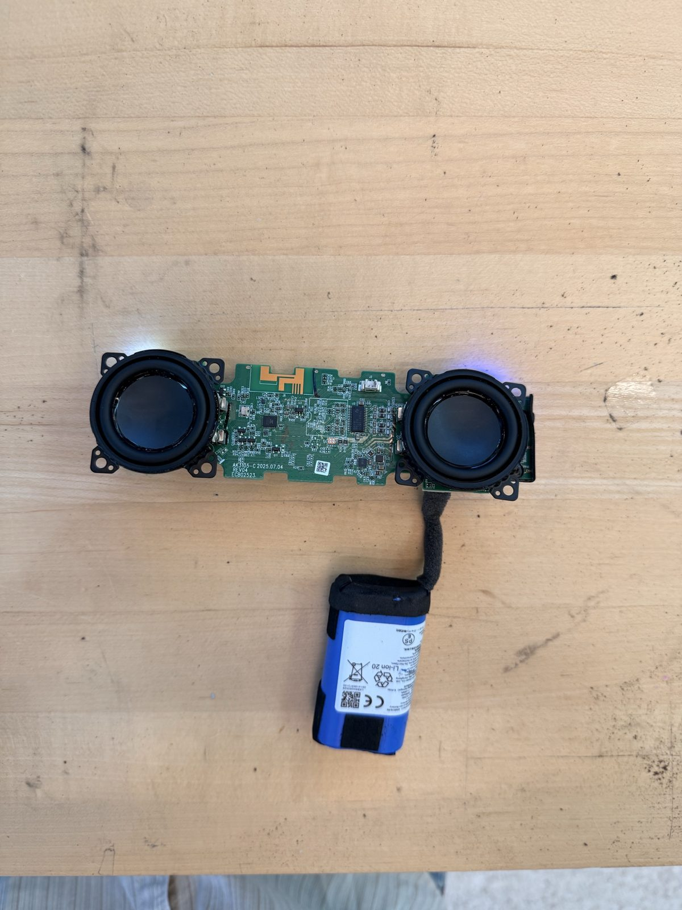
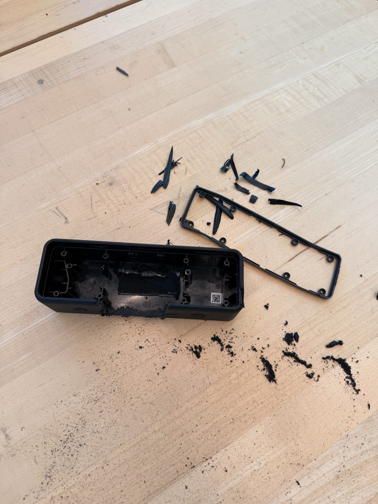
I left out two parts. What I think is the low-end driver was fused to the front baffle, so I couldn't get it out without breaking it. The microphone was stuck the same way. Both are still in the original baffle in Fig 4.
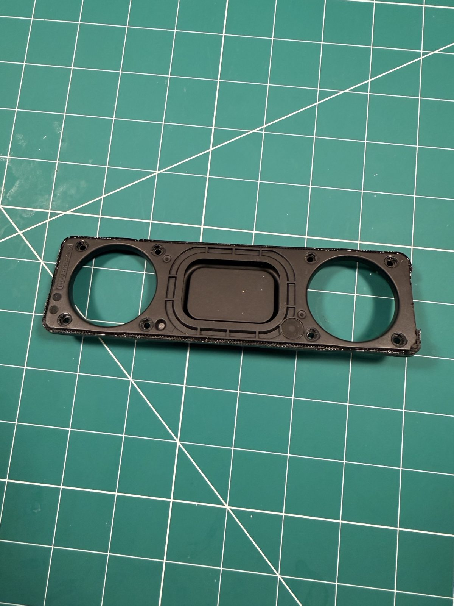
Prototype
Before cutting the full box, I cut a set of baffle mounting plates for the drivers (Fig 5) to check that the hole diameter and the screw locations were right. They fit, so I knew my driver measurements were good. The plan was to use the plates in the final box too, but they pulled the drivers further back from the front panel than I wanted, so I mounted the drivers straight to the front panel instead.
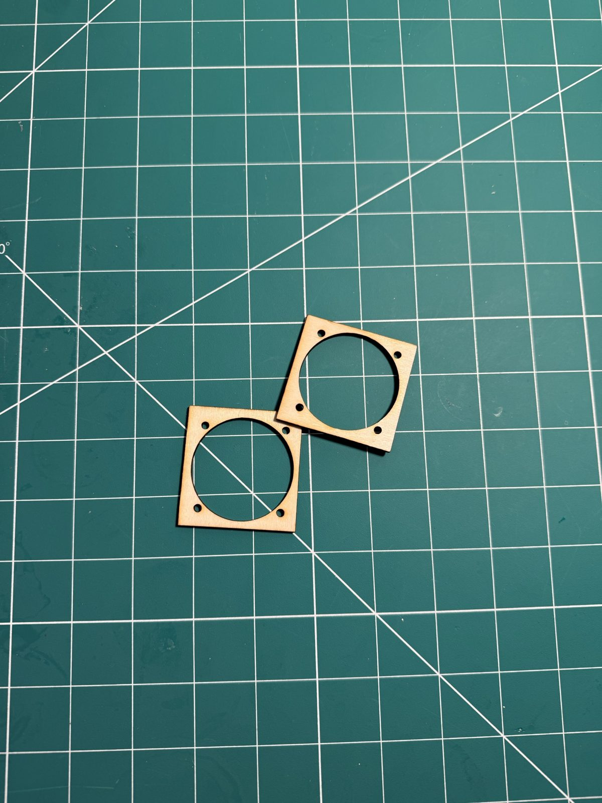
Measurements & Design
I measured the board, each driver, the battery, and the button and port locations with calipers. From those numbers I worked out the inside size of the box and where each hole needed to go: two driver openings with four screw holes each, five slots on top for the buttons, and a long slot on the side for the port.
I generated the box in MakerCase, then brought the pieces into CorelDRAW to add the cutouts and the swan. I picked the swan because I like the image, and I had already worked on it before to make custom cards, so it was ready to go.
25% power
100% power
Finger joints
The cut settings were the same ones I used for acrylic in Project 2. I turned the raster power down from 30% to 25% for the plywood.
Build
Because I measured everything so carefully, the whole box fit on the first cut. The drivers lined up with their holes, the screw holes matched, and the slots lined up with the buttons and the port.
One thing didn't go to plan. I meant to cut small plywood pieces that would drop into the button slots and press the buttons on the board. During the cut, those small pieces fell through the grate of the laser cutter, and I didn't know I could get them back. Now I use a thin tool to press the buttons through the slots.
Time Log
The project took about 3 hours total, and most of that was measuring and design.
| When | Step | Activity & Reflection |
|---|---|---|
| Oct. 13 | Pitch | In classPitched a new enclosure for a Bluetooth speaker. The idea stayed the same through the project. |
| Before build | Teardown | Pried off the grill, removed 8 screws, and cut away the rubber casing with a Dremel to get the board, drivers, and battery out. |
| Work days | Prototype | Cut the driver mounting plates to check the hole size and screw locations. They fit, but I left them out of the final box because they set the drivers too far back. |
| Work days | Measure & design | Measured every part with calipers, made the box in MakerCase, and added the cutouts and swan in CorelDRAW. This was most of my time. |
| Work days | Cut & build | Cut the box in one go and put the electronics in. Everything fit, but the button pieces fell through the laser grate. |
| Oct. 27 | Delivered | In classBrought the finished speaker to class. |
Total: about 3 hours. The in-class work days were Oct. 15, 20, and 22.
Reflection
The biggest thing I learned is how much careful measuring saves you. I spent most of my time with the calipers, and because of that I only had to cut the box once. Cutting the mounting plates first was also worth it, because it checked my driver measurements on a small, cheap piece before I cut the whole box.
I also learned a lot from taking the speaker apart. Waterproof products are built to stay closed, so getting the parts out took a lot more force than I expected, and I had to leave two parts behind.
The speaker plays, and I think it sounds good. It would sound better with the extra driver, and if the box was airtight. I didn't seal the port or the button slots, and losing the button pieces left those holes open. Next time I'd plan for the extra driver, seal the box, and catch small parts before they fall through the grate.
Final Display
Here's the finished speaker. The front has the two drivers and the rastered swan (Fig 1). The top has five slots for the buttons, and the side has a slot for the port. The whole box is held together with the finger joints from MakerCase.
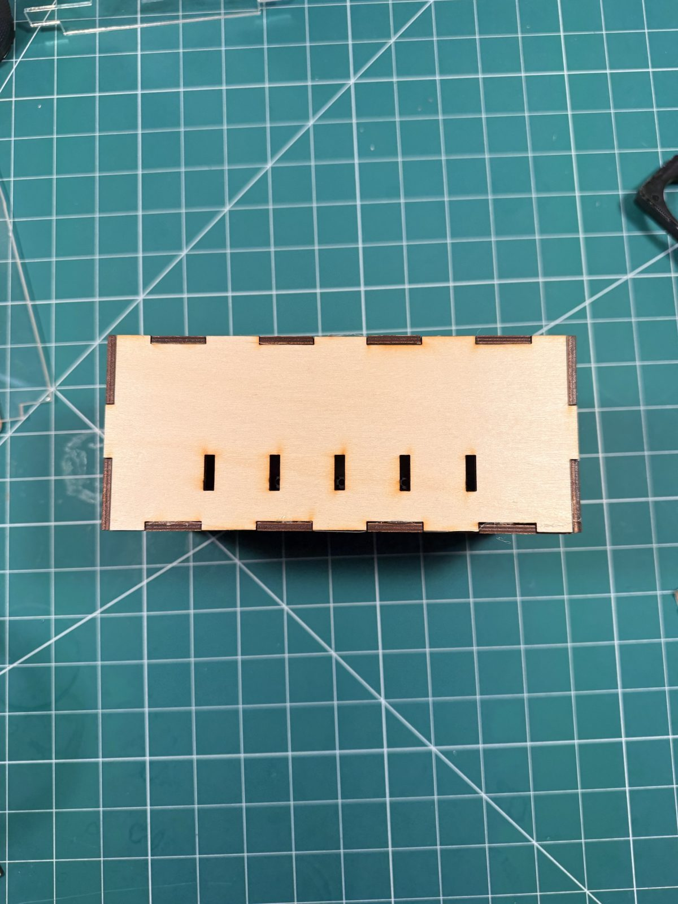
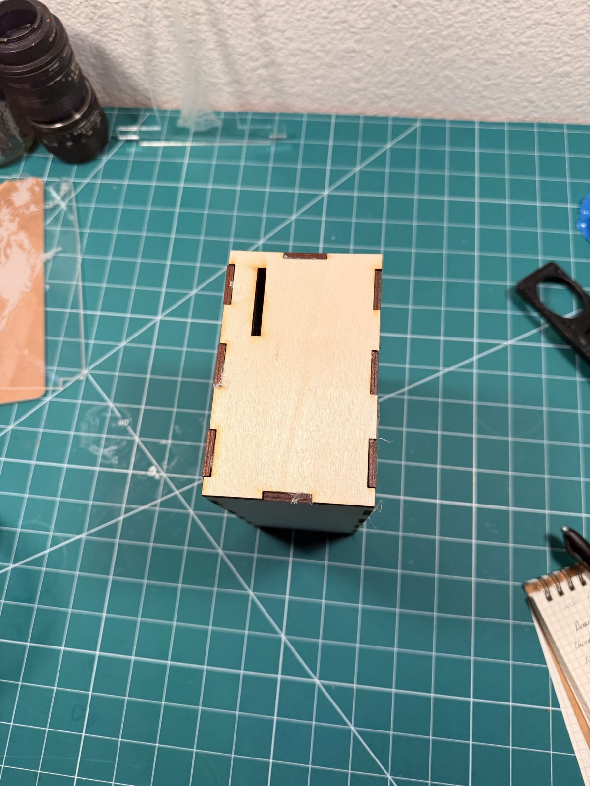
Phone Stand
3D Printed Charging Stand
A 3D printed phone stand, resized from a GrabCAD model to fit my phone and its USB-C charger, with my name recessed into the back.
This page goes through the project in order. First is what I made and why, then the research I did and how I changed the model. After that is the print, my time log, a reflection, and photos of the finished stand.
Overview
The goal of Project 4 was to 3D print a phone stand that holds my phone with its case on and charges it at the same time. I started from a model I found on GrabCAD, changed the dimensions to fit my phone, and added my name to the back. The charging cable runs through the stand and plugs into the bottom of the phone, so it charges while it sits there.
The assignment also included a calibration cube activity to get to know the printers. I didn't print a calibration cube, so I learned the printer and slicer through this print instead.
Research
The starting model is the Mobile Phone Stand (Sheet Metal) on GrabCAD, which I downloaded as a STEP file. The assignment warned that STL files import as meshes, which are very hard to change. A STEP file comes in as a real solid, so I could edit the dimensions in Onshape.
For the print settings, I read up on infill and organic supports in PrusaSlicer. Organic supports branch out like a tree to hold up overhangs, and they come off cleaner than regular supports. Weston, one of the TAs, suggested painting on organic supports, so I went with that.
Design
I imported the STEP file into Onshape and changed the model to fit my phone with its case on: 80 mm wide and 20 mm thick. Then I added a recessed GUS on the back.
For charging, the stand has a slot in the middle of the front lip and an opening in the back. A USB-C cable comes in through the back, runs under the phone, and comes up through the slot to plug into the bottom of the phone.
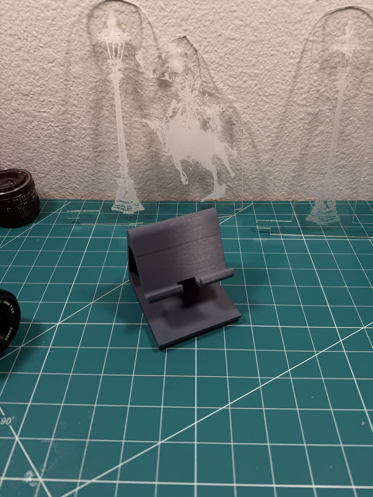
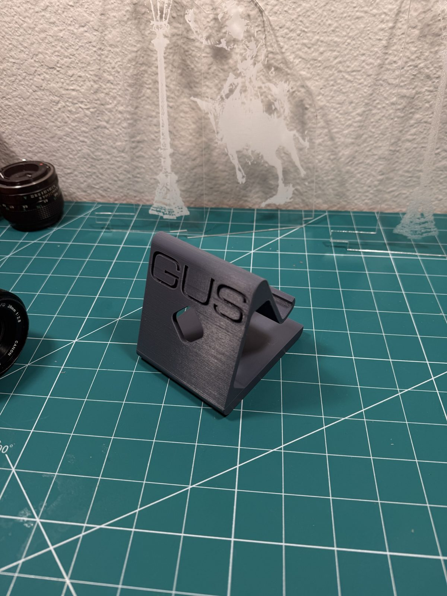
I sliced it in PrusaSlicer and printed it on a Prusa MK4 in PLA. I used 20% infill, since a phone stand needs to be sturdy, and the 0.15 mm Structural profile with organic supports painted on. The print took 4 hours and 17 minutes, and it worked the first time.
20% infill, organic supports
4 hr 17 min print
at ~$20/kg PLA
Time Log
I did this one pretty quickly. I designed it in one class and printed it that night.
| When | Step | Activity & Reflection |
|---|---|---|
| One class | Research & design | In classFound the stand on GrabCAD, imported the STEP file into Onshape, resized it to fit my phone (80 mm wide, 20 mm thick), and added the recessed GUS. |
| That night | Slice & print | Outside classSliced it in PrusaSlicer with the 0.15 mm Structural profile, 20% infill, and painted organic supports. Printed it on the Prusa MK4 in 4 hours 17 minutes. It worked the first time. |
| Nov. 3 | Delivered | In classBrought the stand to class to demo it charging my phone. |
Total: one class period for design, plus a 4 hour 17 minute print.
Reflection
Honestly, I expected to hit more hurdles. I kept the design pretty conservative, since I started from a model that already worked and only changed the dimensions and added my name, so it makes sense that it printed fine the first time.
The most valuable part was getting familiar with the slicer. Picking a profile, setting the infill, and painting on supports turned out to be simple, and I realized how easy it can be to print something. Starting from a STEP file also helped a lot, because I could change real dimensions in Onshape without fighting a mesh.
Final Display
Here's the finished stand holding my phone while it charges (Fig 1). The phone sits on the front lip with its case on, the USB-C cable plugs in through the slot, and the cable runs out the back under the GUS (Figs 2a and 2b).
Name Plate
Write-up in progress — check back soon.
Final Project
Transamerica Pyramid Lamp
An 18-inch scale model of San Francisco’s Transamerica Pyramid in PLA and plywood — and it lights up from inside. Pitched Nov 10, delivered Dec 3.
The pitch
Four slides: the idea, the machines, and the plan. Press Present for full screen and use the arrow keys, or scroll through them here. The model on the first slide is live — drag it to look around.
Photos on the slides are reference images collected for inspiration. The Bummer & Lazarus engraving is from the 1860s and in the public domain.
CORAL LED Ornament Network
A wireless network letting children at Christmas‑in‑the‑Park individually program their own LED ornaments — designed and built by a four‑person team at SCU.
The Team
Design
A reliable, low-cost, weather-sealed wireless LED ornament for CORAL — delivered this quarter as two validated, manufacturable design artifacts: an ERC-clean single-layer PCB and a watertight hybrid enclosure, both grounded in our community partner's requirements and best-practice engineering.
CORAL's Christmas-in-the-Park display suffered two recurring failures — individual nodes dropping connectivity mid-show, and RF congestion knocking out whole sections of the tree — compounded by no weatherproofing against winter rain and cold. A fully deployed wireless network was beyond a single academic quarter, so we re-scoped to the foundation a future team can build on directly: a fabrication-ready board and a field-ready enclosure, each validated in software before committing to any cost.
Finalized PCB
The node is a circular, single-layer board sized to drop into CORAL's existing ornament mounting hardware. Eight WS2812B NeoPixels sit radially around the perimeter for maximum visibility across the tree, with a Seeed XIAO ESP32-C3 module centered on the board. Supporting circuitry: a 74LVC1G125 level shifter to drive the 3.3 V → 5 V NeoPixel data line cleanly, an AMS1117 LDO regulator, per-LED decoupling capacitors for power stability, and a reverse-polarity protection diode on the input. We carried the proven snopixel form factor forward while swapping the legacy ESP8266 for the ESP32-C3, and dropped the IR receiver and spare header — QR-to-tablet activation replaced IR, simplifying the schematic and cutting cost.
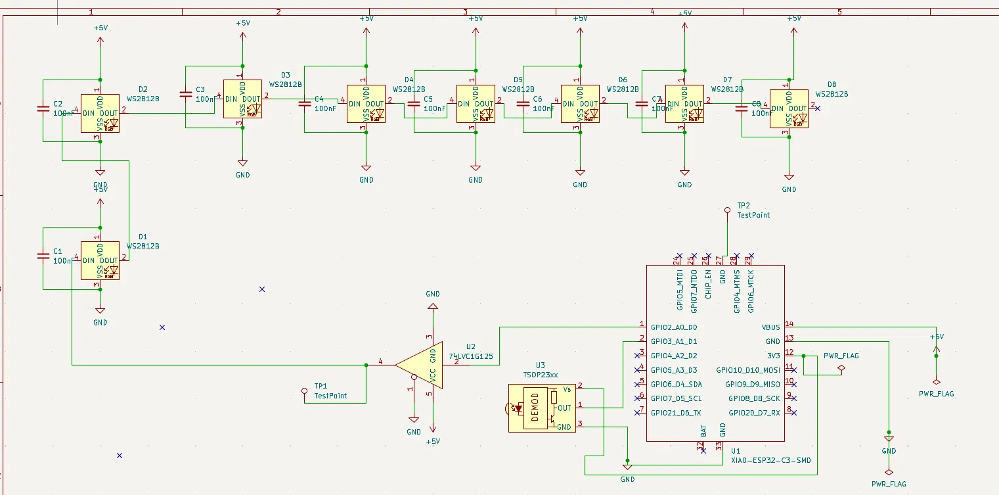
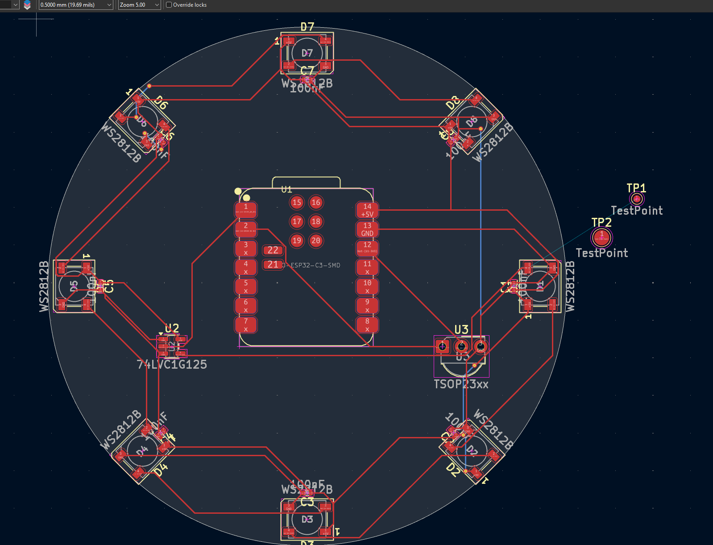
The design was validated in KiCad 10.0 before any fabrication. The Electrical Rules Check (ERC) passed with no errors — confirming net connectivity and power-flag correctness — and the Design Rules Check (DRC) verified that trace widths, pad clearances, and board dimensions met manufacturing tolerances and the partner's physical constraints. The per-unit bill of materials comes to roughly $5.56, with the ESP32-C3 module the largest line item at $5.00. This quarter we physically procured only the ESP32-C3 modules as a proof-of-concept investment, deferring the remaining components to future procurement.
Power Scoping
Each ornament runs on 5 V. At full brightness the eight WS2812B LEDs draw up to 60 mA each — 480 mA peak per node, or P = 5 V × 0.48 A = 2.4 W peak per ornament, before microcontroller overhead. Voltage drop along a daisy chain is a known failure mode — distal nodes receiving insufficient voltage was one of the original system's core complaints — so the design accounts for power injection at multiple points and current-limiting on the data line.
Finalized Enclosure
The enclosure separates the optical and structural roles rather than asking one printed part to do both. The visible dome is a commercially available injection-molded transparent ornament shell — far clearer than any 3D print could achieve, which matters because the entire point is for students to see their own pattern crisply on the tree. (This ruled out the translucent PETG of earlier prototypes: even minimal diffusion works against the display.) A single printed part — identical on both sides of the clamshell — carries the PCB seat, wire routing, and the sealing interface.
Waterproofing comes from an o-ring seated in a square groove and compressed between the two halves by six M2 bolt-and-nut sets spaced around a face flange. The groove is sized for a 1⁄16″ o-ring at roughly 25–30% compression with 0.05 mm vertical clearance at full clamp — enough to seal without extruding the o-ring out of its seat. The injection-molded dome and the PCB are both bonded into the closure with epoxy. The result: one unique printed part per enclosure, a reliable watertight seal, and field-serviceable interior access for firmware updates and maintenance.
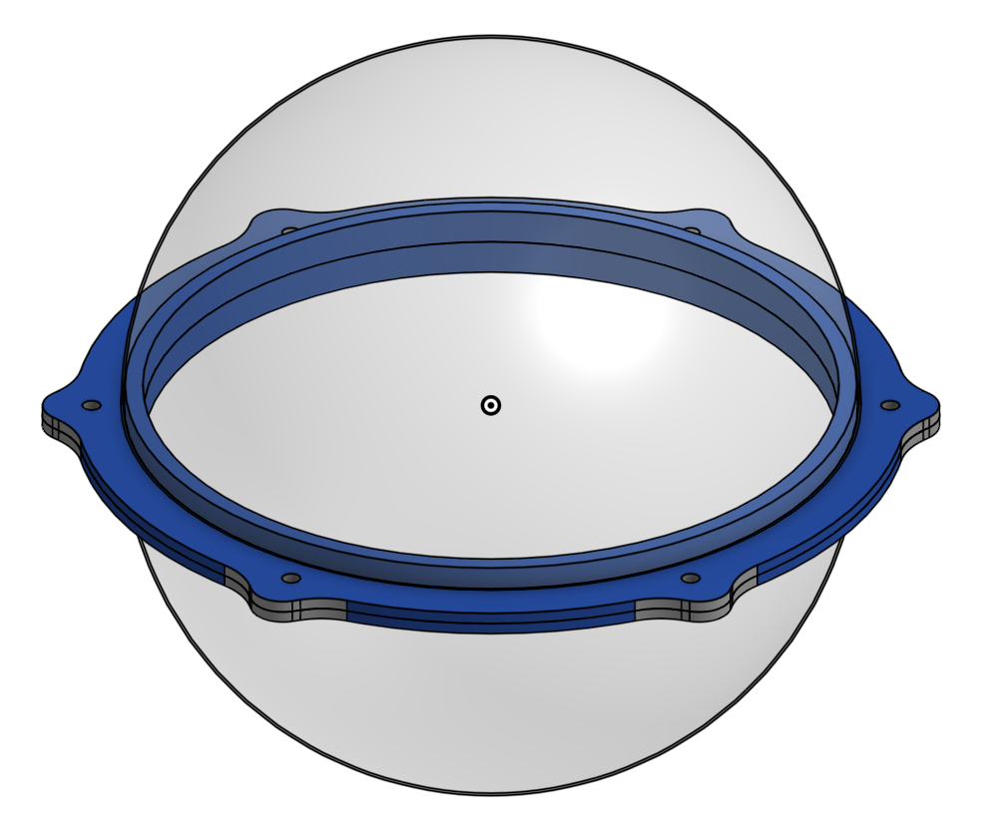
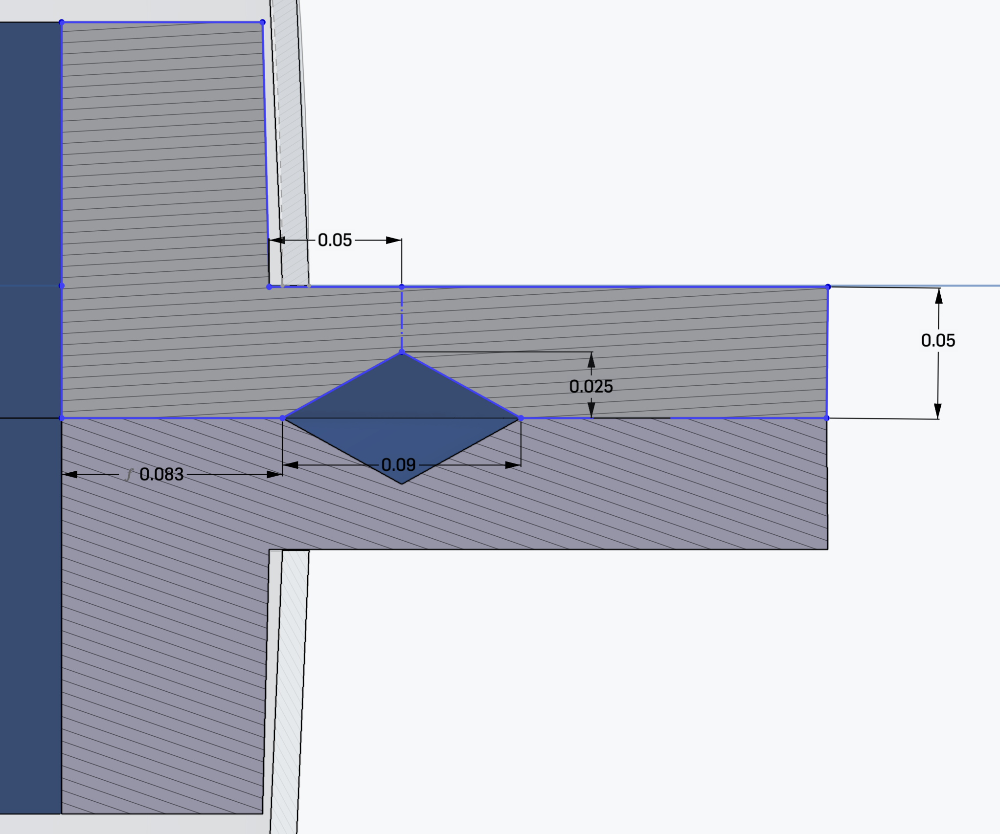
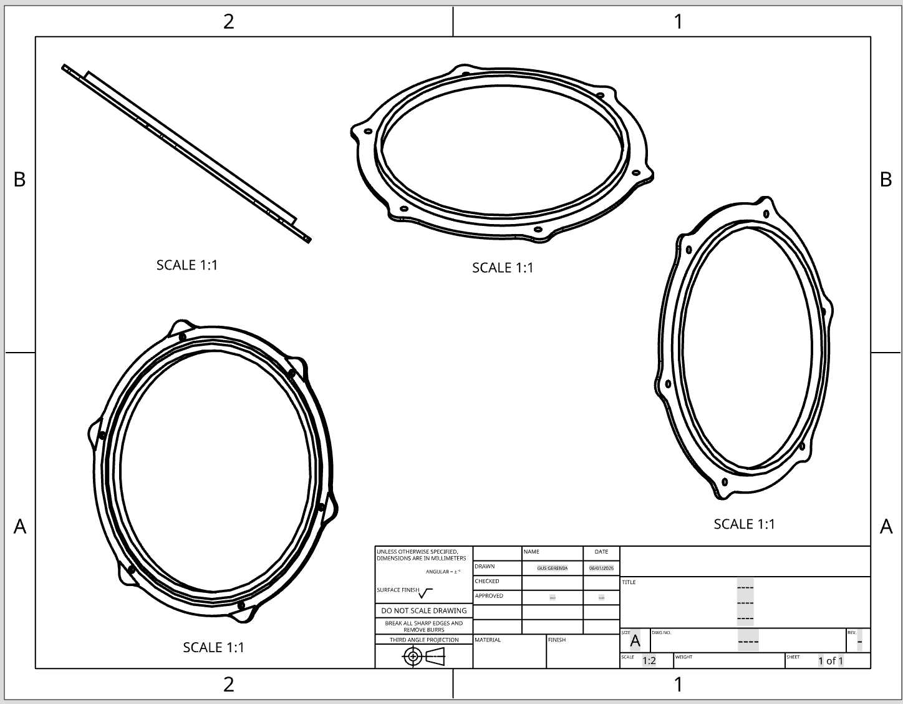
Outcome Against Our Metrics
We set three measurable success metrics, each mapped to a partner pain point:
System & Network Architecture
The validated direction handed off to the next team: ESP-NOW broadcast on channel 1 for tree-wide sync, with BLE for individual student connections. ESP-NOW is connectionless, operates at the MAC layer without a router, and holds stable throughput at sub-10 ms latency — well suited to a dense outdoor RF environment where standard WiFi congests. The open item is network topology: node count, range, and hub-vs-mesh structure remain to be defined and tested. All open items are documented in the carry-over report so a future team can pick the work up directly.
How We Got Here
The finalized design above is the product of a deliberate iteration — the sections below document the path, the decisions, and the legacy hardware we carried forward.
Enclosure Iteration — Initial Prototype
The first enclosure was a three-piece fully printed assembly: two threaded translucent-PETG hemispheres and a PCB seat ring, with wire entry through a grommet at the peak. The translucent PETG was intended to double as a built-in diffuser, softening the NeoPixel output across the shell.
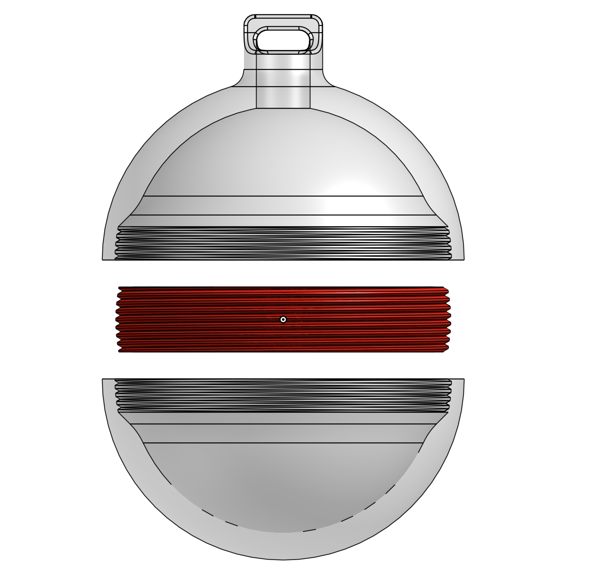
Feedback & Pivot
Three problems drove the redesign. Diffusivity worked against the goal — the ornament is a light display, not a lantern; scattering the output washed out color and brightness, and post-processing couldn't change the material's bulk scatter. Waterproofing failed — a threaded joint is not watertight; capillary action pulls water along the helical gap regardless of clamp force. Part count was unsustainable — three unique printed parts per unit means 75 parts across 25 ornaments. John's Week 5 feedback was direct: a fully custom three-piece enclosure wasn't justifiable when off-the-shelf alternatives existed. The solution direction — minimize unique parts, split the optical and structural roles across hybrid materials, and replace the thread with an o-ring closure — led to the finalized design shown at the top of this page.
Decision Matrix Summary
We evaluated MCU, wireless protocol, enclosure form factor, and student interface against reliability, usability, implementation risk, and firmware compatibility. ESP32-C3 won on BLE 5.0, native USB, and confirmed firmware. QR-to-tablet activation beat RFID on cost and zero added infrastructure. Hybrid o-ring closure beat single-shell and threaded designs on serviceability, waterproofing, and part count.
Legacy Schematic Reference
The new board adapts snopixel v3.0: WS2812B NeoPixels, level-shift buffer, Schottky diode, and power pads. The original sheets below document the inherited design we carried forward (ESP8266 → XIAO ESP32-C3; IR receiver and spare header removed).
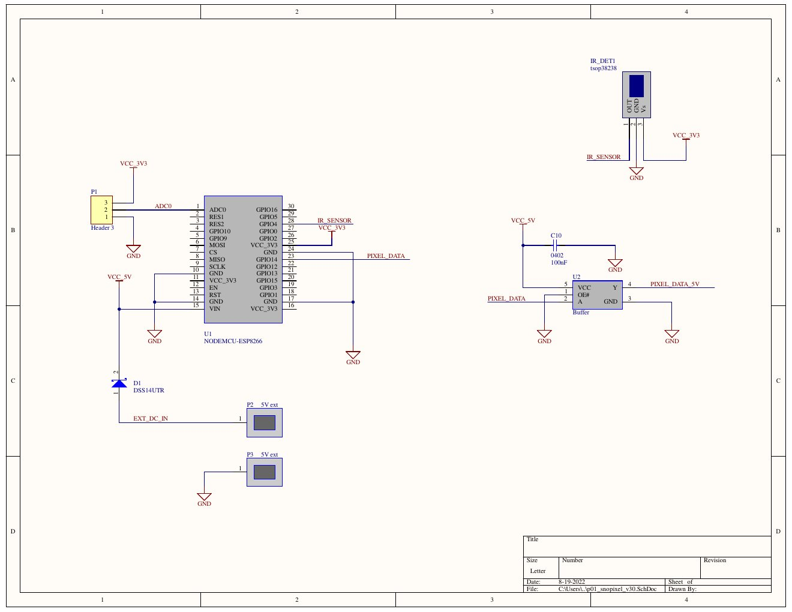
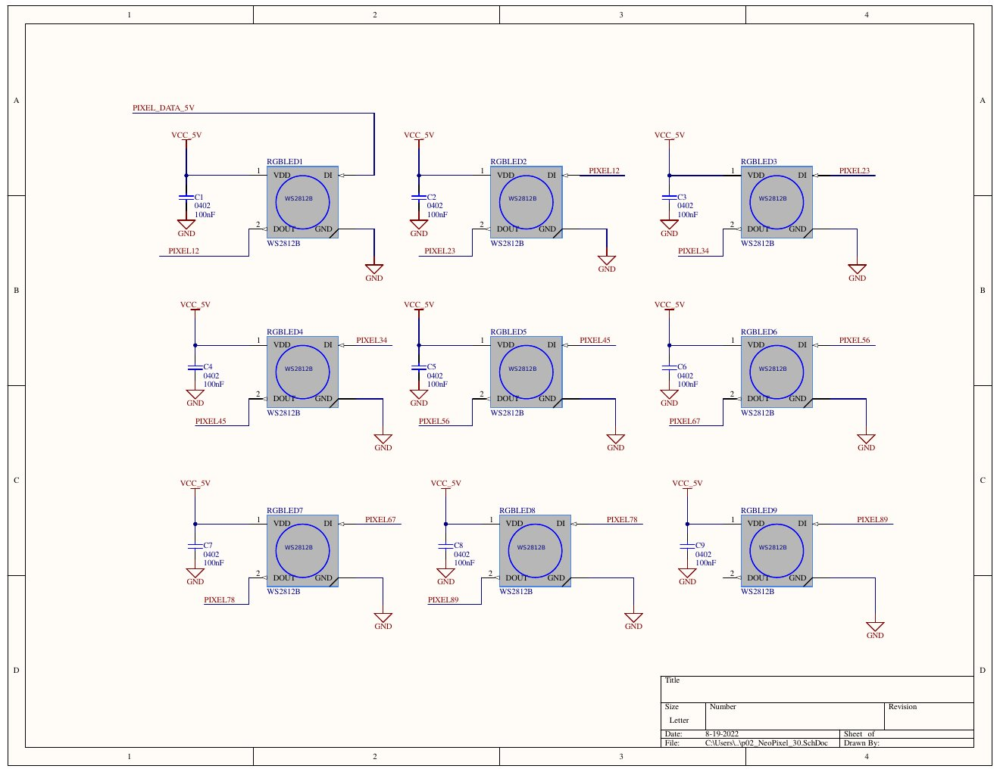
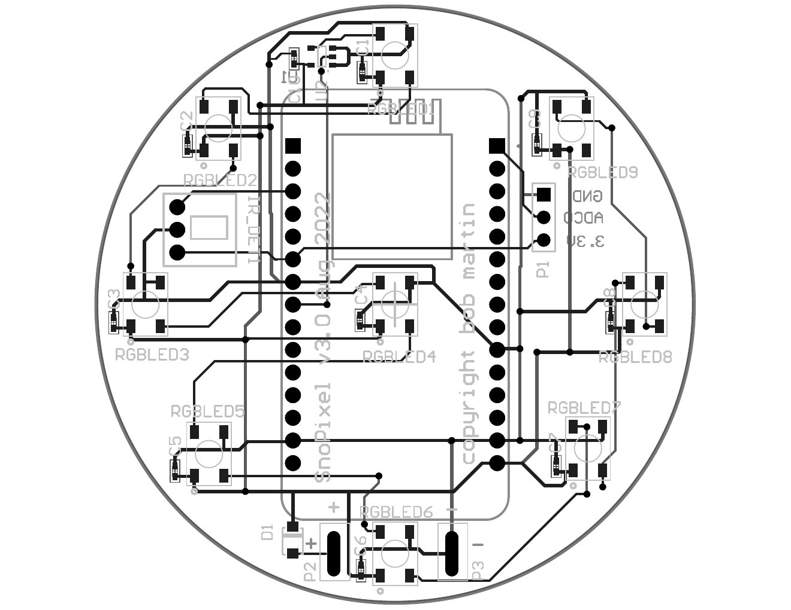
XIAO ESP32-C3 Pinout
Reference for the module replacing the ESP8266. Note: legacy code used GPIO32 for NeoPixel data, which does not exist on the ESP32-C3 — GPIO10 (D10) is the data-pin candidate, and A3/GPIO5 is unreliable for analog.
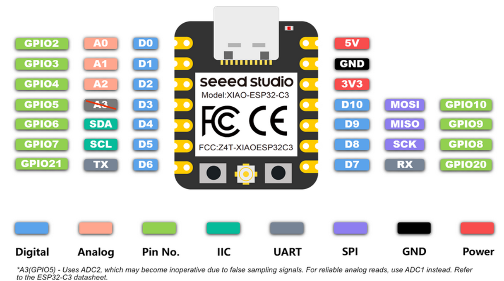
Deliverables
Current Updates
Final — Prototype, Documentation & Reflections
Final Prototype & Customer Feedback
Our design solution consisted of two deliverables:
- Power scoping for the system and prototypes of both the enclosure and final PCB design — informed by communication and guidance from community partners.
- Carry-over documentation to both describe the work already done, and create a roadmap/explanation for future teams to finish the system.
I also had a final meeting with our community partner John. John was largely supportive — he appreciated the work we did and how we implemented his feedback, but he said he hopes we learned a valuable lesson about both the most important and often most difficult part of engineering. Before starting a prototype or adopting legacy hardware, the real work begins by ideating and iterating with your ‘client’ (him). He said that if we were to do the project again he would have wanted options, write-ups, and real speculative work about the different possible solutions, rather than as much of the deliverable as fast as possible. We can conclude that though we did meaningful work, we could have gotten more — and maybe more valuable — progress done, if we had taken time to scope the project and lay an achievable timeline.
Final Project Documentation
I finalized the design in a couple ways. I took all the information we had presented, along with my personal documentation and images, and put them into an update which I wrote out in a word document. After that, and because I am pretty bad at HTML, I put files to be displayed in organized folders and by specifically referencing them in my copy I used separate claude CLI prompts to implement the different sections in the right place. I also deleted the outdated gantt map which I have no way to update lol.
Challenges & Reflections
The most significant challenge we faced, as I mentioned in my final reflections, was the process of properly scoping our project. Because we were overwhelmed with the sheer size of the project, we jumped directly to prototyping without having cohesive design decisions or solutions. This left our project fragmented and, over the course of 10 weeks, not as done as it could have been. I think the single most important thing I can take away from this, and this is something John stressed, is that the engineering process almost entirely consists of foundational research. A design can be shipped and prototyped a dozen times relatively easily — but understanding the needs of a customer, supporting each decision you make with facts, and understanding what an optimal solution looks like takes time, and often it is a precursor to any actual building.
Week 5 — Progress Report
This week concentrated on advancing the physical enclosure design to a complete CAD model, integrating feedback from our community partner on cost and manufacturability, and modernizing the digital notebook workflow to support continuous deployment.
What I Did
I finalized the CAD model for the Christmas ornament enclosure. The design consists of two threaded halves — top and bottom — that screw together, with a dedicated PCB seat inside for proper board registration. Key details: 3.15″ outer diameter, PETG material for the print run, a sealed wire exit through the hook top secured with epoxy, and a polishing process to increase shell transparency. Tolerances on the PCB seat were set to match board dimensions with appropriate clearance. I also monitored team progress throughout the week, captured decisions from team meetings, and followed up on open action items to keep the project moving.

Team Effort
Danish and I scheduled and led a meeting with our community partner, John, to present the current enclosure design and receive structured feedback. The conversation focused on design cost, manufacturability, and how to properly justify each feature decision rather than building on assumptions. We have been coordinating closely on PCB–enclosure integration to make sure the mechanical and electrical designs develop in sync rather than converging at the last minute. Meetings were documented and key decisions were captured so the full team stayed aligned even when not in the room.
Digital Notebook Changes Made
Migrated the digital notebook from a static host to a Git repository connected to Vercel for continuous deployment. Changes pushed to the repo now go live automatically — no manual upload step. Combined with Claude CLI, this makes iterative content updates and design changes significantly faster. The workflow change itself is the infrastructure improvement this week; the Week 5 report is the first entry published through the new pipeline.
Challenges & Next Steps
The most significant challenge, raised directly by John during our partner meeting, is cost. The current three-piece design — two threaded ornament halves plus a PCB seat — carries too much per-unit manufacturing cost to scale. I am refining the approach: rather than a fully custom printable enclosure, the goal is to identify an existing off-the-shelf ornament shell and design only the closure mechanism and weather seal as a manufacturable part. This reduces unique-part count, lowers cost, and keeps the mechanical scope realistic. Next step: source candidate stock enclosures and prototype the closure attachment before the next CP check-in.
Enclosure Design — Iteration & Finalization
This report documents the enclosure design process from initial prototype through the finalized hybrid design — covering the specific failure modes that drove the pivot, the reasoning behind each tradeoff, and what the final approach achieves.
What Drove the Pivot
The V1 enclosure was a three-piece fully printed assembly: two threaded PETG hemispheres and a PCB seat ring. Three problems made it untenable at scale.
The most immediately visible problem was diffusivity. Translucent PETG was chosen with the intent of acting as a built-in light diffuser, but the effect worked against the display goal. The NeoPixels in this enclosure are the primary visual output — the ornament is a light display, not a lantern. Scattering the output softened point sources into ambient glow, washing out color saturation and reducing perceived brightness. Post-processing (acetone smoothing, sanding, polishing) could increase surface transparency but not change the fundamental bulk scatter of the material.
The second problem was waterproofing. A threaded joint is not watertight. Capillary action pulls water along the helical gap between the mating threads regardless of clamp force — the tighter you torque the halves, the more surface contact exists for water to wick into the interior. The enclosure hangs outdoors; this is not an edge case.
The third problem was part count. Three unique printed parts per unit means three separate CAD files to maintain, three separate print runs to manage, and three separate failure modes at assembly. At 25 units, that is 75 printed parts. John's feedback from our Week 5 check-in was direct: the cost and production complexity of a fully custom three-piece enclosure was not justifiable when off-the-shelf alternatives existed.
The Finalized Hybrid Design
The solution was to separate the structural and optical roles of the enclosure rather than asking one printed part to do both. The optical surface — the hemisphere visible to the audience — is an injection-molded commercial shell where surface quality and consistency are already controlled. The single printed part handles geometry-specific functions: PCB registration, wire routing, and the sealing interface.
Waterproofing is achieved via an o-ring compressed between the two halves, clamped by six M2 screws. The printed part carries a square groove sized for a standard 1⁄16″ o-ring cross-section. The groove geometry targets approximately 30% o-ring compression with a 0.05 mm vertical clearance at full clamp — enough compression to seal, not enough to extrude the o-ring out of the seat under clamp force. The joint is additionally backed with epoxy at final assembly.
The result: one printed part per half (two per enclosure), a reliable watertight seal, and maintainable interior access — the M2 screws can be removed in the field to service the PCB without destroying the enclosure.
Digital Notebook Changes Made
Added Enclosure Iteration subsection to the Design page with stage-by-stage documentation and four reference images. Added this report to the Updates section.
Week 4 — Progress Report
Focus shifted from understanding the project to actively planning and building it. The team moved from broad ideas to a concrete product specification, defined MVP and stretch goals, and began early prototyping on the physical enclosure.
What I Did
My primary contribution was synthesizing all legacy project documentation shared by John into a single comprehensive master timeline. This involved reviewing dozens of files across PCB schematics, firmware scripts, network architecture notes, and enclosure references — extracting technical details to build a structured BOM, Gantt timeline, milestone tracker, and MicroBlocks infrastructure notes sheet. Required significant external research to fill gaps and verify component compatibility (confirming the ESP32-C3 replaces the ESP8266; identifying the GPIO pin conflict with the XIAO module). In parallel, began early prototyping on the physical enclosure: defined the mechanical concept — snap-fit halves, QR label recess, diffuser seat, daisy-chain wire exits.
Team Effort
The volume of legacy documentation made the project feel overwhelming at first. By carefully working through John's files together, we normalized much of what appeared to be open R&D into concrete, achievable milestones. Existing firmware, schematics, and network scripts revealed significant validated foundational work — meaningfully de-risking the project. We aligned on a tiered goal structure: MVP is functioning PCB, enclosure, and ESP-NOW comms; Target is end-to-end demo on 5 boards; Stretch is full 25-ornament tree with wiring complete.
Digital Notebook Changes Made
Full site redesign: two-column editorial layout with persistent sidebar navigation and a refined type system (EB Garamond + DM Mono). Design page now contains five zoomable reference images. Interactive Timeline page with filterable 36-task Gantt. All pages converted to structured editorial layouts. Home page rebuilt as a project overview with navigation cards.
Challenges & Next Steps
Biggest challenge: scope management — translating an ambitious multi-track project into a timeline honest about what can be completed by June. Most critical next step: confirm MicroBlocks firmware availability for the XIAO ESP32-C3 and identify the correct NeoPixel GPIO pin — blocking dependency for PCB layout before schematic can be finalized.
Week 3 — Progress Report
This week centered on conducting our community partner interview with John at CORAL, signing and finalizing our team contract, and translating everything we learned into a clear set of project requirements and deliverables.
What I Did
I facilitated the initial team interview with John on April 18th, guiding the conversation and taking detailed technical notes on the system architecture, hardware constraints, and the transition to the XIAO ESP32C3. Followed up one-on-one with John to clarify specifics and sketch a concrete deliverables list and timeline. Also put together a BOM for our R&D hardware purchases. My role: Communications, Budget, and Enclosure/Mechanical. I have hands-on CAD and 3D printing experience, and the enclosure redesign is a well-scoped mechanical problem I'm confident tackling.
The wildest idea I floated — and got shot down — was questioning whether we need wireless communication at all. Why not just use I2C? John's answer was clear: signal integrity becomes a serious problem running a bus around an entire Christmas tree. Fair enough.
Team Effort
Our brainstorming this week was largely guided by John directly. The project has significant existing design precedent — legacy hardware, documentation, sample code, and a defined direction — so traditional wide-open ideation wasn't the right tool. The real analytical work happens iteratively during R&D. John knows what he needs; our job was to listen carefully, ask good questions, and map that onto what we can realistically deliver by June. Team contract completed and signed by all four members.
Digital Notebook Changes Made
Added Week 3 Progress Report to Current Updates. Added Team Contract and CP Interview Notes to Deliverables. No structural changes to the rest of the site — the existing layout was working and the focus this week was content.
Challenges & Next Steps
Hardest ongoing challenge: expectation management with our community partner. The project is genuinely ambitious — new MCU, redesigned PCB, revised wireless protocol, new enclosure, and software integration — all before June. Most critical next step: begin R&D in parallel — sourcing XIAO ESP32C3 boards, starting enclosure CAD, getting hands on the legacy hardware to understand what we're actually changing.
Week 2 — Progress Report
This week's work centered on building out our understanding of who this project affects and why — mapping stakeholders, stress-testing assumptions with AI, and developing a thorough question bank ahead of our community partner interview.
What I Did
My primary contribution was the initial customer and stakeholder analysis — identifying and characterizing the key groups involved: CORAL students, instructors, Catholic Charities, Christmas-in-the-Park organizers, and the general public. For each group I mapped knowns, unknowns, assumptions, and open questions. Most striking insight: a single dropped wireless packet isn't just a technical failure — it's a letdown for the specific student who built that ornament. That reframe changed how seriously I think about reliability as a design constraint.
Team Effort
As a team, we used AI as a brainstorming partner in the early empathy phase. We gave the AI our project context and asked it to identify stakeholders and map impacts. The AI surfaced the City of San Jose and the FCC as underweighted regulatory stakeholders. We discussed which suggestions to keep: some were too generic, but spectrum congestion, student emotional investment, and weatherproofing mapped directly onto real design constraints. We then collaboratively developed the CP interview question bank.
Digital Notebook Changes Made
Built this site from scratch using a single HTML file hosted on tiiny.host. Added Project section with sub-pages for Community Partner, Design, Deliverables, and Current Updates. Populated Community Partner page with CORAL background. Added team bios to About.
Challenges & Next Steps
Biggest challenge: calibrating how much weight to give AI-generated stakeholder suggestions — some genuinely useful, others too generic. Key next step: conduct the interview with CORAL to replace assumptions with actual data and narrow design constraints around reliability, wireless frequency, venue power, and student interaction.
Team Contract
Problem Statement
CORAL seeks to provide children at their Christmas in the Park event with an interactive, hands-on experience where each child can individually program and control their own LED light display. The current challenge is that no such wireless system exists — one must be designed from scratch that is reliable, easy for children to use, and capable of handling many simultaneous users without significant signal interference. With the integration of a new microcontroller, there is an opportunity to redesign a more durable, weather-resistant enclosure with easy USB port access.
Team Roles
Team Values
Community Partner
Our community partner is CORAL — Communities Organizing Resources to Advance Learning — an afterschool expanded learning program run by Catholic Charities of Santa Clara County. Founded in 2003, CORAL operates across more than 22 school sites in the county, serving roughly 2,000 students each day in kindergarten through eighth grade.
The program addresses the opportunity gap facing children in high-poverty neighborhoods in San Jose, providing a structured, supportive environment during afterschool hours. Every day school is in session, CORAL extends the school day until 6pm, offering a free healthy snack, an hour of homework help, and an hour of literacy instruction, alongside enrichment activities including sports leagues, science and art clubs, theatre, music, and field trips.
Support is offered in Spanish, Vietnamese, Korean, Portuguese, Samoan, and Amharic — reflecting the diversity of the communities served. The program is entirely secular and open to students of all backgrounds. CORAL's broader mission is to close the achievement gap by involving students, families, schools, and the wider community in the learning process.
About
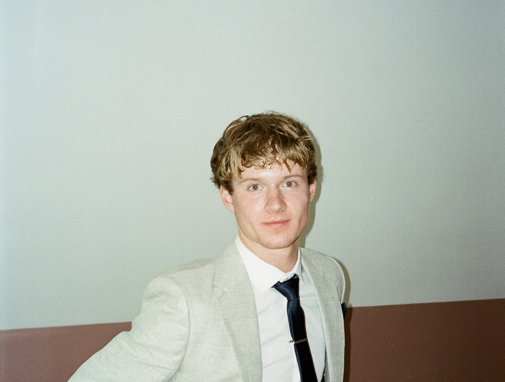
Hi, I'm Gus — a senior general engineering major at SCU. I've worked as a bike mechanic, carpenter, and in quite a few restaurants. I'm interested in applying mechanical and practical skills to physical solutions at scale. Technical skills: CAD/technical drawing, C-based languages, embedded systems, and extensive practical knowledge of materials.
Contact
Reach me by email: amgeremia@scu.edu